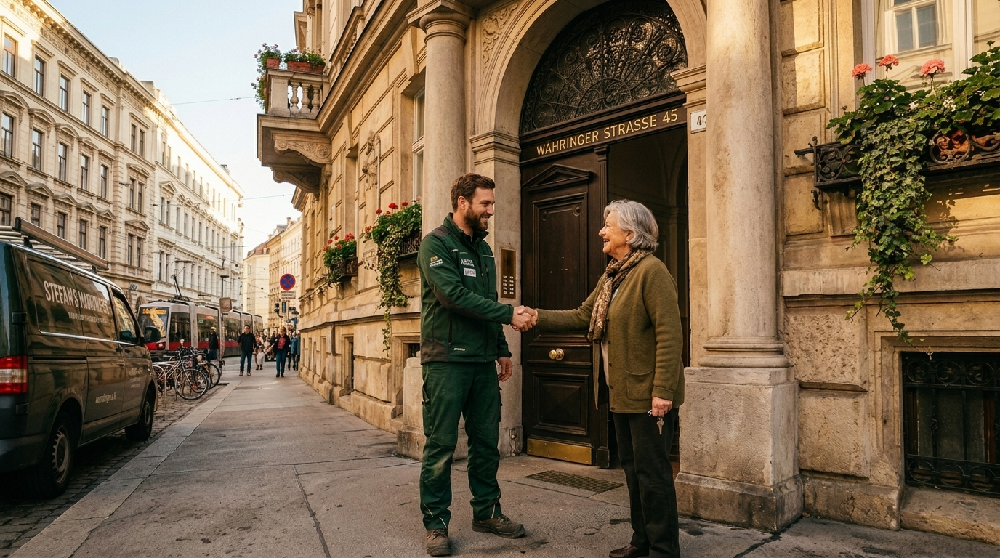

Wohnungs- & Büroentrümpelung
Ob Privatwohnung oder Bürofläche — wir räumen vollständig und hinterlassen nichts als Platz. Besonders bei sensiblen Situationen wie Todesfall, Scheidung oder Betriebsauflösung arbeiten wir diskret und professionell.
Von der Erstbegehung über die Räumung bis zur besenreinen Übergabe übernehmen wir die gesamte Abwicklung. Kein Stress, keine Überraschungskosten.
- Wohnungen, Büros & Geschäftsflächen
- Entsorgung nach Wiener Umweltstandards
- Diskrete Abwicklung bei Todesfällen
- Besenreine Übergabe inklusive
- Festpreisgarantie nach Besichtigung

Haushaltsauflösungen
Eine Haushaltsauflösung bedeutet mehr als nur Möbel wegräumen — oft stecken Erinnerungen, Wertvolles und persönliche Geschichte dahinter. Wir gehen sorgfältig vor, trennen Brauchbares von Entsorgbarem und behandeln jedes Objekt mit Respekt.
Egal ob kleiner Einpersonenhaushalt oder große Familienwohnung — wir erledigen alles aus einer Hand, zuverlässig und zum Festpreis.
- Komplette Haushaltsauflösung & -räumung
- Sortierung: Verwertbares, Entsorgung, Übergabe
- Auch kurzfristig & am Wochenende
- Festpreisgarantie nach Besichtigung

Umzug (Nah & Fern)
Ob Umzug ums Eck oder quer durch Österreich — wir bringen Ihr Hab und Gut sicher und pünktlich ans Ziel. Mit eigenem Fahrzeug, eingespieltem Team und dem nötigen Equipment.
Kein Möbelstück zu groß, kein Weg zu weit. Wien, Niederösterreich, ganz Österreich.
- Nahzüge in Wien & Umgebung
- Fernumzüge quer durch Österreich
- Möbel, Haushaltsgeräte, Sperrgut
- Eigenes Fahrzeug & erfahrenes Team
- Pünktlich, versichert, zuverlässig

Keller – Dachboden – Garage
Jahrzehnte alter Kram, Elektroschrott, alte Möbel, defekte Geräte — wir schaffen Ordnung und räumen alles weg, was nicht mehr gebraucht wird. Schnell, gründlich, zum Festpreis.
- Keller- & Dachbodenräumung
- Garagen & Abstellräume
- Elektroschrott & Sondermüll
- Getrennte, umweltgerechte Entsorgung
Möbelabbau & -aufbau
Große Schrankwände, Küchen, Betten — wir bauen fachgerecht ab und wieder auf. Kein Werkzeug, kein Stress, keine zerkratzten Böden.
- Schrankwände, Betten, Küchen
- Professionelles Werkzeug & Schutzausrüstung
- Kombinierbar mit Umzug & Entrümpelung
Besengerechte Übergabe
Am Ende jedes Auftrags hinterlassen wir die Fläche besenrein und übergabebereit — inklusive Dokumentation auf Wunsch. Sie übergeben den Schlüssel, wir erledigen den Rest.
- Reinigung nach Räumung inklusive
- Übergabe-Dokumentation auf Wunsch
- Standard bei jeder Wohnungsauflösung